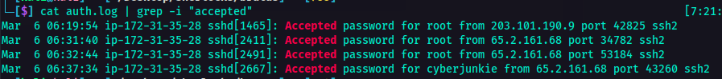

DFIR Sherlock Challenge - Brutus
Introduction
This is a DFIR challenge from HTB Sherlock. It's a very easy challenge, nothing fancy and crazy stuff. In this challenge, I dealth with two files that were given: the auth.log and wtmp file.
| auth.log | wtmp | |
|---|---|---|
| Purpose | Tracks authentication-related events. | Logs user logins, logouts, and system reboots. |
| Data Format | Plain text | Binary |
| Recorded Events | Login attempts (success & failure), SSH access, sudo usage user switching, authentication failures | Successful logins, session durations, system reboots, and shutdowns |
| Usage | Security monitoring, detecting bruteforce attacks, privilege escalation tracking | User session tracking, forensic analysis of login history |
Sherlock Scenario:
Challenge
So, the first goal in this challenge was to analyze the auth.log file and to determine the IP address used by the attacker to perform the brute force attack.
I opened the auth.log file and as I expected, there were a lot of lines.
Reading the auth.log file, I have noticed that there were a lot of Failed password for invalid_user server_adm from lines which gave the idea wherein there was a bruteforce attack performed. Along with this line was the IP of the attacker. At this point, I already achieved the 1st task which was to determine the IP adderss of the attacker.
It was indicated in the challenge that the bruteforce attack was successful and that the attacker was able to gain access to an account on the server. The next goal was to determine which account was compromised.
So using the auth.log file, I used grep to check for the keywords where there was a successful login.

Found it! So it was time for the next task. The next goal was to identify the timestamp when the attacker logged in manually to the server. Since the wtmp is a binary file, I can't just use cat or strings command to open it. I used a tool called utmpdump to be able to read the contents of the wtmp file. After which, I was able to cross reference the IP used by the attacker to the user that he was able to logged in. In this case, it was an easy look. (Well coz the challenge is very easy. It won't be like this if it was an insane one. Probably. Hahah).
The next goal was to determine the session number assigned to the attacker for the user account from the one compromised from the bruteforce attack. So I went back to auth.log file to filter the session numbers and I got it.
This was the one.
During the time the attacker was logged in as the compromised user, the attacker added a new user as part of their persistence strategy on the server and assigned it with higher privileges. The next goal was to determine which user was this. So I went back to the auth.log file again and filtered new user.
The next goal was to determine when did the attacker's first SSH session end. So I opened wtmp file again and checked the sequence where the IP attacker logged in and ended. That way I got the timestamp where the SSH session ended.
The final goal was to determine what is the full command the attacker executed using sudo. In this case the attacker logged in to the user account that he created and executed the command. So I went back to auth.log file and filtered the COMMAND keyword.
Conclusion
That's it for the challenge. It was a fun DFIR challenge.